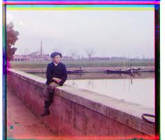
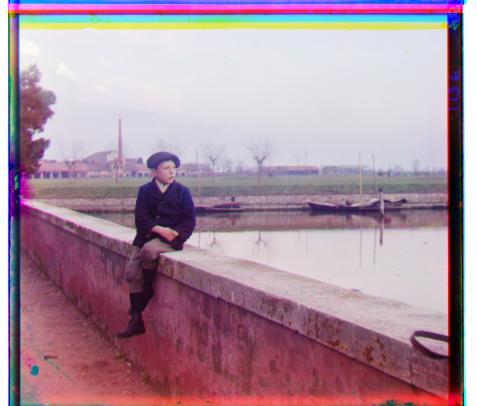
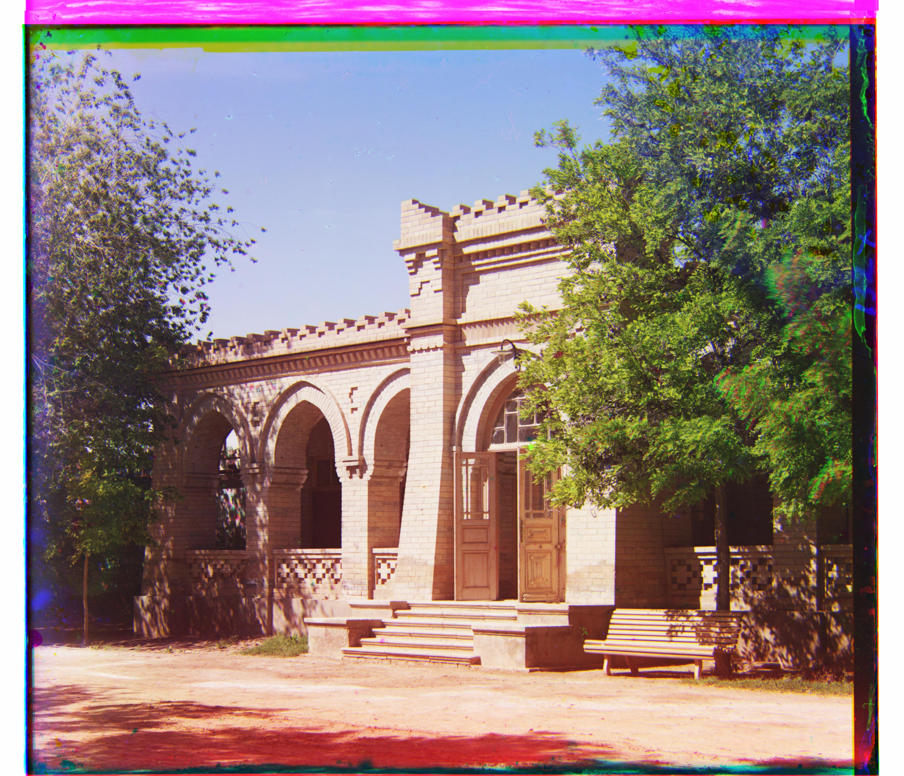
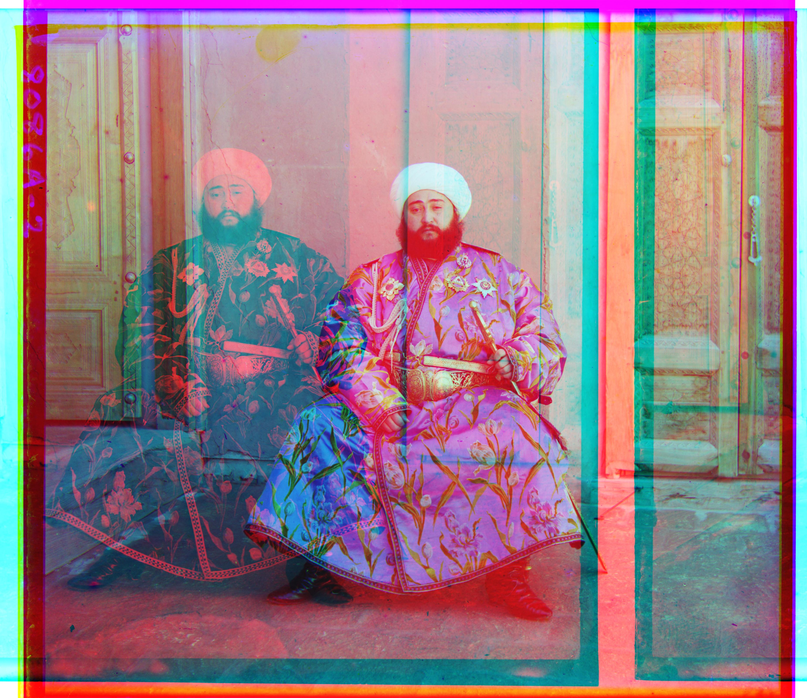
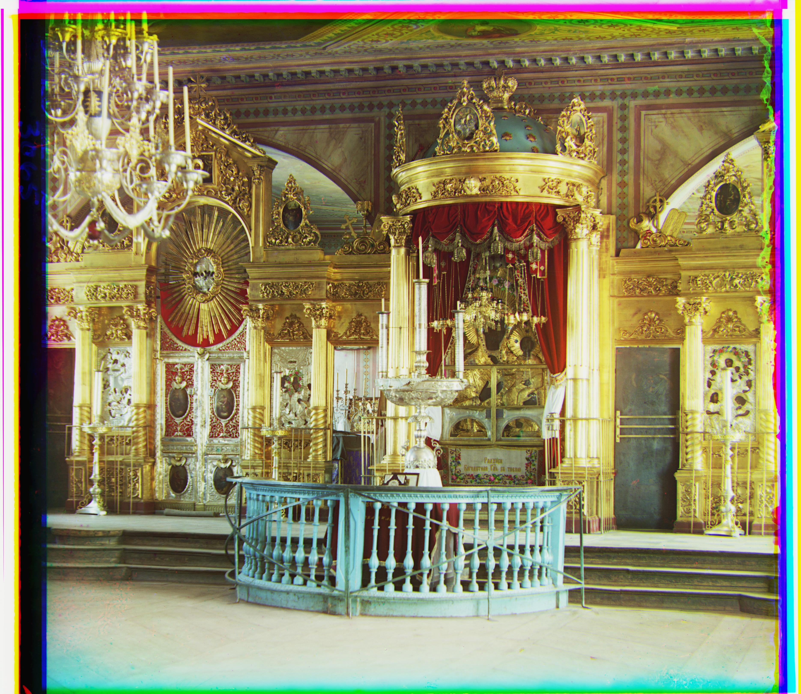
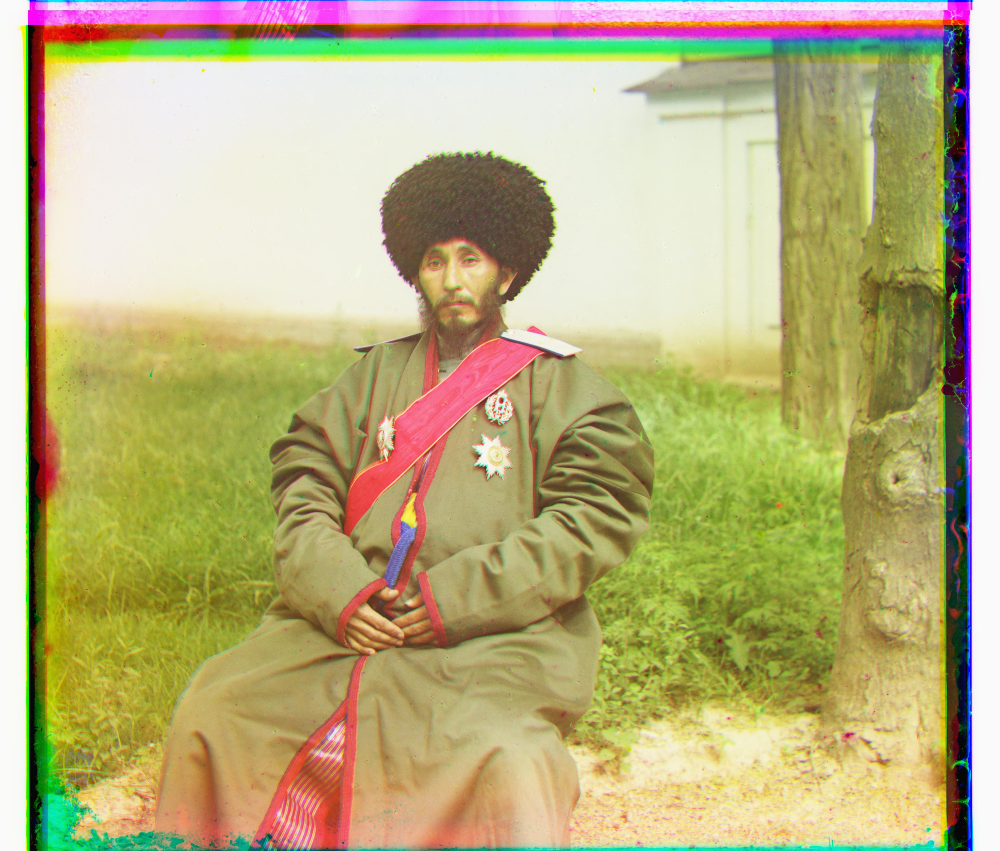
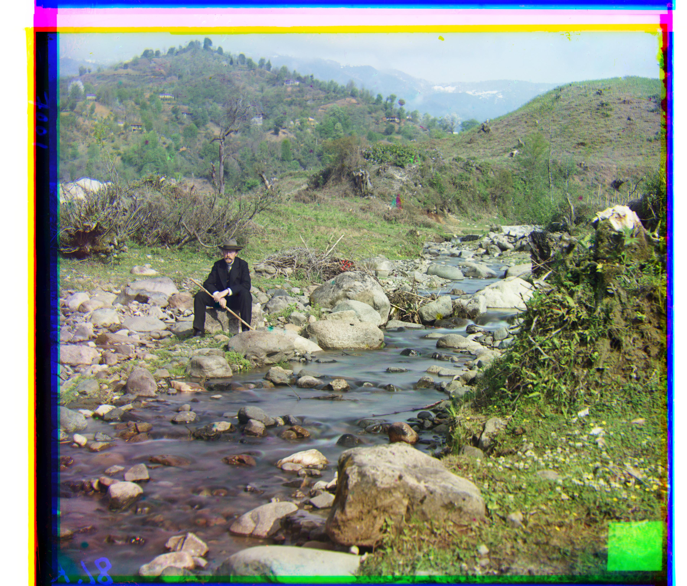
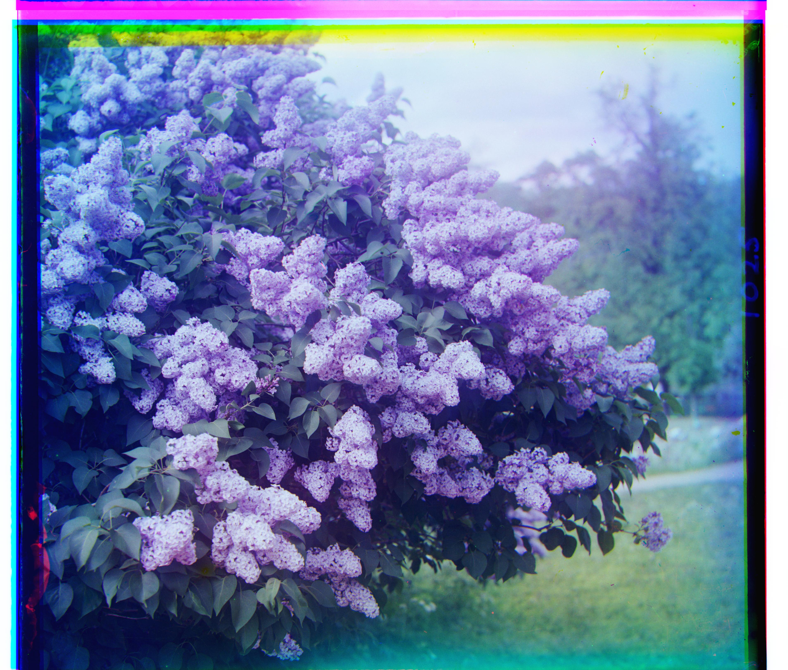

Project 1: Colorizing the Prokudin-Gorskii Photo Collection
Overview
In the early 20th Century, Sergei Mikhailovich Prokudin-Gorskii photographed the Russian Empire by capturing three separate black-and-white exposures of the same scene, each through a different color filter (red, green, and blue). He believed that by projecting all three through matching filters, he could reconstruct a full-color image. Today, those images stored in the Library of Congress give us a unique colored picture of life in the Russian Empire..
As a CS 180 student, my goal here was to use python to automate the alignment process for the different color channels to create a full-color image. This was achieved through a combination of brute-force and image pyramids.
Part 1: Single-Scale Alignment
For the smaller JPEG-scanned plates, a simple brute-force search was good enough. For every possible
displacement (dx, dy) in the range [-15, 15], I shifted the channel being aligned using
np.roll and scored the shift using the frobenius norm between the shifted channel and the fixed blue channel.
To ensure borders didn't affect the L2 norm score, I cropped a 15-pixel border off of both channels before computing the score.
Below are three examples run through this single-scale search. On the left is the naive result of stacking the raw channels with no alignment at all; on the right is the result after searching for the best offset.


Part 2: Image Pyramid
While brute-force search worked well for the smaller jpeg images, it was not suitable for the larger full-resolution scans,
which were often 3600 pixels wide. To speed things up, I used the image pyramid techniques learned in CS 180.
Rather than running brute force and L2 norm on the entire image, we store successively more downscaled images of
the original (5 levels in this case) and run brute force search on the lower levels to reduce the search space in
the higher resolution layers. In this specific case, I used the skimage.transform.rescale function to
downscale the image 4 times by a factor of 2. Then, beginning at the lowest resolution layer, I ran a 30-pixel wide
search with the L2 norm and used the location on the next layer but decreasing the search window by 6 pixels each time.
This allowed the images to be aligned in just seconds.
The sequence below illustrates this on the Na ostrovi︠e︡ Kapri plate, showing the composite image at three levels
of the pyramid, from coarsest to finest. Notice how the color fringing is large and blurry at the coarsest level,
gets progressively smaller as the pyramid refines, and disappears almost entirely by the time the search reaches
full resolution.



Final Gallery
Running the pyramid alignment on every plate in the collection produces the following colorized results. Notice that the image of the Emir remains misaligned. This is because the Emir's garments are largely blue, making the L2 norm balloon when scoring based on the intensity of color in each filter. One way to circumvent this issue would be to use the sobel filter, but that is in the bells and whistles section of the project, which wasn't implemented here.










